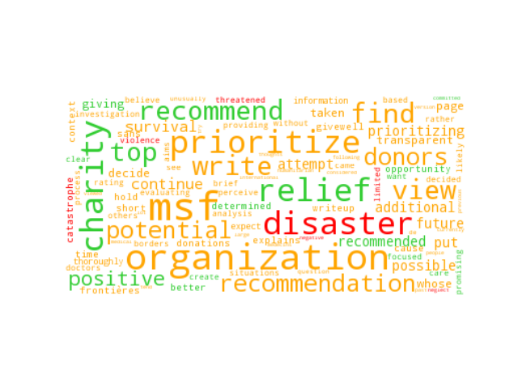
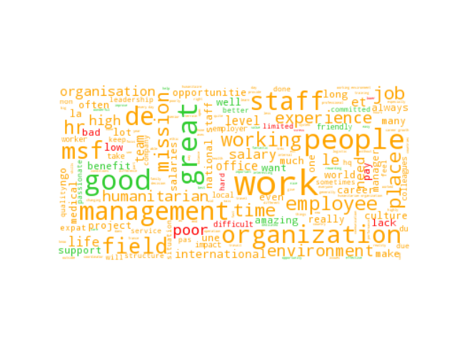
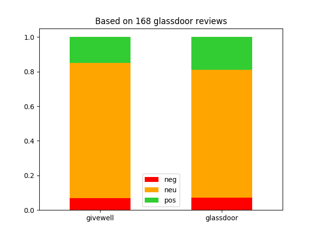
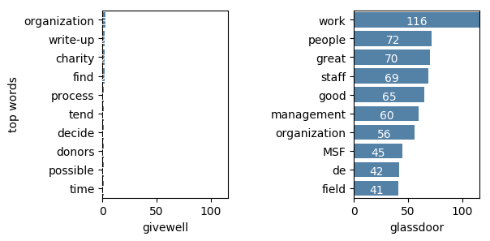
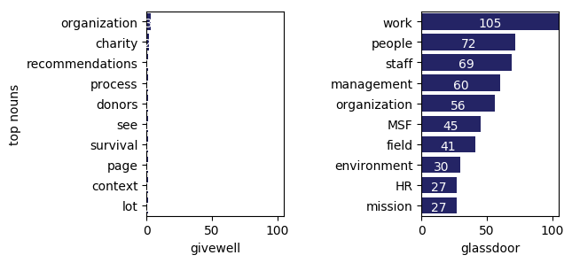
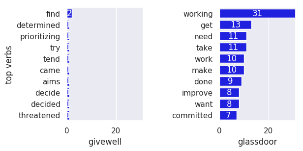
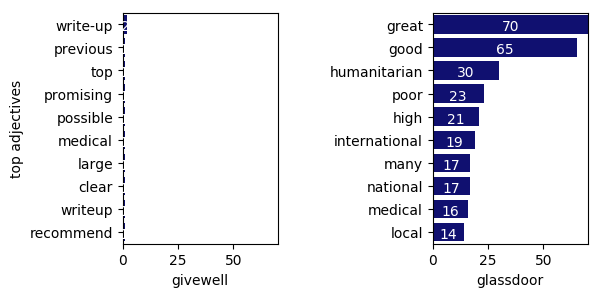

Doctors without Borders
Word clouds of the reviews
The size of a word represents its relative frequency. The color represents the sentiment associated to it by our analysis: positive (green), neutral (yellow) and red (negative).
Givewell
Glassdoor
Sentiments of the sentences in the Givewell and Glassdoor reviews
Top Words
Top Nouns
Top Verbs
Top Adjectives
Top Adverbs